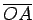

Inhalt Index DeskTop Bronstein

 Geometrie Planimetrie Geometrische Definition der Kreis- und Hyperbel-Funktionen Definition der Kreis- oder trigonometrischen Funktionen
Geometrie Planimetrie Geometrische Definition der Kreis- und Hyperbel-Funktionen Definition der Kreis- oder trigonometrischen Funktionen


Die trigonometrischen Funktionen eines Winkels  werden entweder am Einheitskreis mit dem Radius R=1 oder für spitze Winkel am rechtwinkligen Dreieck mit Hilfe der Bestimmungsstücke Ankathete
werden entweder am Einheitskreis mit dem Radius R=1 oder für spitze Winkel am rechtwinkligen Dreieck mit Hilfe der Bestimmungsstücke Ankathete  Gegenkathete a und Hypotenuse c definiert.
Gegenkathete a und Hypotenuse c definiert.
Am Einheitskreis erfolgt die Messung des Winkels von einem festen Radius  der Länge 1 bis zu einem beweglichen Radius  im entgegengesetzten Drehsinn des Uhrzeigers (positive Richtung):
im entgegengesetzten Drehsinn des Uhrzeigers (positive Richtung):
| (3.6) |
| (3.7) |
| (3.8) |